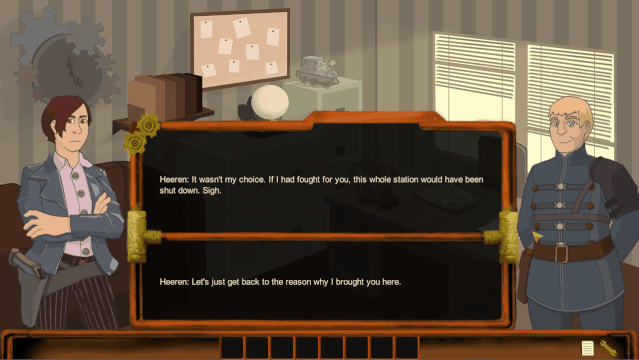
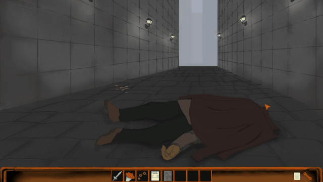
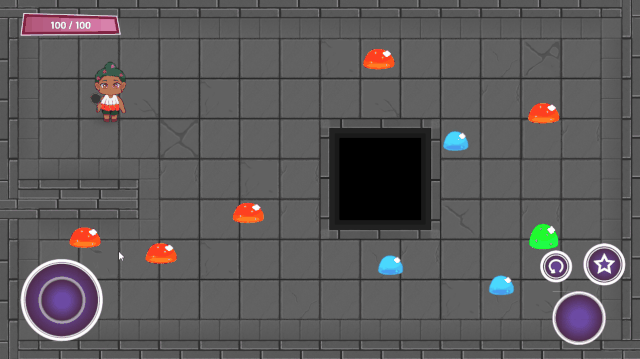

Hi! I'm Tuomas Vaajamäki (or Vaajamaki) and I'm a game programmer. Here is a sampling of some of the projects I have worked on.
For any additional information, project offers etc. email me at tvaajamaki@gmail.com.
Last Train - 2018
- - - - - - - - - - - - - - - - - - - - - - - - - - - - - - - -
- - - - - - - - - - - - - - - - - - - - - - - - - - - - - - - -
- - - - - - - - - - - - - - - - - - - - - - - - - - - - - - - -
- - - - Placeholder for a gameplay video - - - -
- - - - - - - - - - - - - - - - - - - - - - - - - - - - - - - -
- - - - - - - - - - - - - - - - - - - - - - - - - - - - - - - -
- - - - - - - - - - - - - - - - - - - - - - - - - - - - - - - -
Last Train is a VR Escape room game set in the Japanese Metro system, 2018. (8 Person team)
Created during a 3 month (2 months for half of the team) exchange period at Trident College in Nagoya, Japan. The Team featured members from Finland, Japan and Singapore.
My main role on the project was creating item and environment based interactions. I also ended up doing some light 3D-modeling, voice recording and general audio editing.
Fliegenstad - 2017


Fliegenstad is a 2D visual novel puzzle(ish) game from 2017 made with Unity. (5 Person team)
Made during a three month university course, I was the sole programmer on this project. The game is heavily reliant on scripting with few actual original systems.
The only real programming challenge was creating a dialog system that could incorporate player choice and alter scenes accordingly.
LoanQuest - 2018

LoadQuest was an experiment in using Lua scripting with the Defold game engine, 2018. (7 Person team)
Mobile 2D dungeon-crawling game for Android with light randomization for the dungeon layouts. Not a great success but functional on a good day.
It was an opportunity to learn both a new language in Lua and gain a better understanding of version control with three programmers on the team.
BuildChopper - 2015


BuildChopper was one of the first Unity projects I created, back in 2015. (Solo)
A very rough prototype for how different types of vehicles would work using Unity physics.
Switching between different points-of-view and camera styles to complete "puzzles".